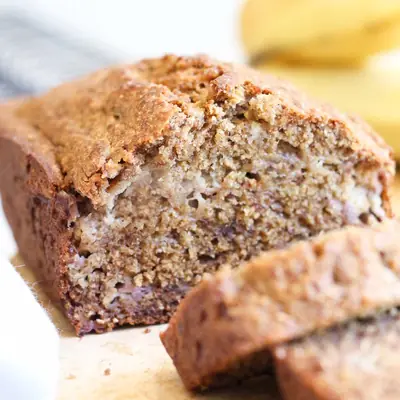

Healthy Banana Bread

Ingredients
- 4 Medjool Dates, pitted
- 125ml (½ cup) Milk
- 80ml (⅓ cup) Coconut Oil
- 60g (¼ cup) Natural Greek Yoghurt
- 2 Eggs
- 1 tsp Vanilla Extract
- 250g (1 cup) (around 2 large/3 medium small) Ripe Bananas, mashed
- 215g (1¾ cup) White Wholemeal (wholewheat) Flour
- 1 tsp Cinnamon
- 1 tsp Baking Soda
Steps
- Preheat oven to 160ºC (320ºF) and grease a loaf pan.
- Add the Medjool dates to a food processor and blend until it forms a paste. Add the milk and continue to blend until mixed.
- In a large mixing bowl add the date mixture, oil, yoghurt, eggs and vanilla. Whisk until combined. Add the mashed banana and stir.
- In a seperate bowl, mix together the flour, baking soda and cinnamon.
- Add the dry ingredients to the wet and stir until just combined. Be careful not to overmix, some lumps are good.
- Pour the batter into the prepared loaf pan and bake for 55 - 60 mins. Check the loaf is ready by inserting a skewer into the centre. If the stick comes out clean, or with a few crumbles on it, the bread is done.
- Allow to cool in the pan for around 10 mins and then transfer to a wire rack to cool for a further 20 mins + before slicing.
Recipe by Healthy Little Foodies, from Healthy Little Foodies. Saved here for personal use; the original has the full notes, tips and photos. Open original